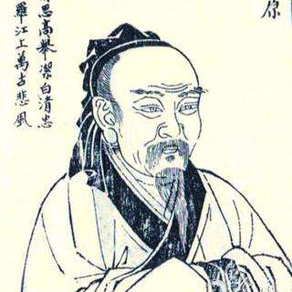

Hello, my name is Quyuan 屈原.
I am a Chinese poet and minister that lives during the Warring States period of ancient China. I was born in the State of Chu (楚国).
I am known for my patriotism and contributions to classical poetry and verses, especially through the poems of the Chu Ci anthology (also known as The Songs of the South or Songs of Chu): a volume of poems attributed to
or considered to be inspired by the way I wrote. Together with the Shi Jing, the Chu Ci is one of the two greatest collections of ancient Chinese verse.
I am also related to the the supposed origin of the Dragon Boat Festival.
Learn more about my life and work here:
My LinkedIn